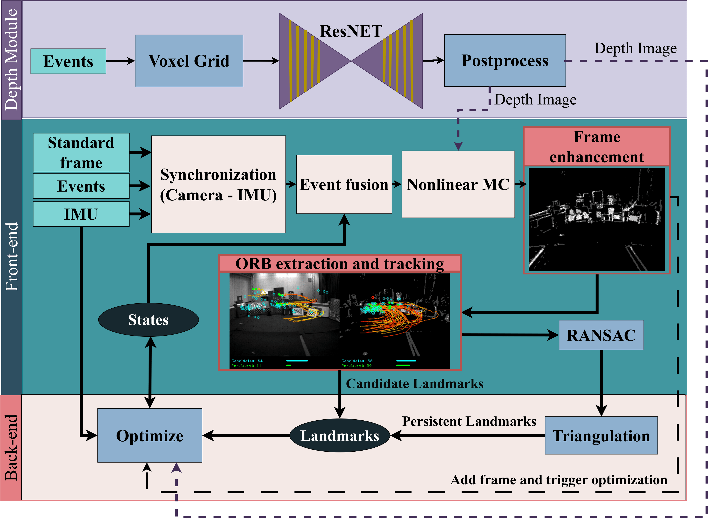

Paderborn University | ICRA 2026
Conventional visual SLAM algorithms often fail under rapid motion or low illumination. Edged USLAM introduces a hybrid visual-inertial system that extends Ultimate SLAM (USLAM) with an edge-aware frontend and a lightweight depth module. Our approach enhances event frames for robust feature tracking and provides region-of-interest based scene depth to improve motion compensation and scale consistency.
Overview of the Edged USLAM pipeline including Frontend, Backend, and Depth Module.
We provide a comprehensive event-based dataset collected via our TESTUDO drone platform, covering various challenges:
Comparison of Edged USLAM tracking performance under aggressive circular maneuvers.
@inproceedings{sariozkan2026edged,
title={Edged USLAM: Edge-Aware Event-Based SLAM with Learning-Based Depth Priors},
author={Sarıözkan, Şebnem and Şahin, Hürkan and Álvarez-Tuñón, Olaya and Kayacan, Erdal},
booktitle={IEEE International Conference on Robotics and Automation (ICRA)},
year={2026}
}